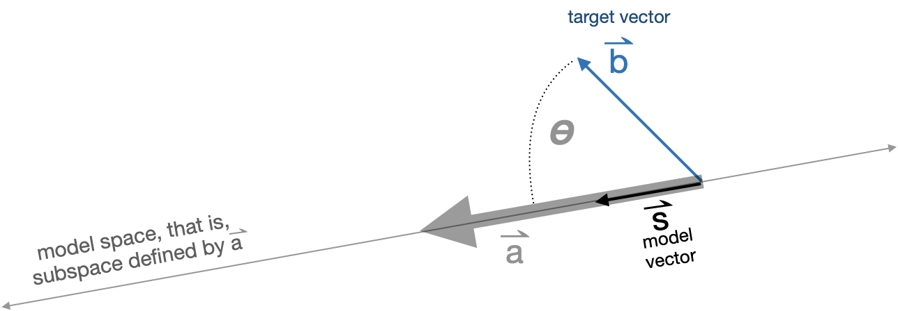

30 Projection & residual
Many problems in physics and engineering involve the task of decomposing a vector \(\vec{b}\) into two perpendicular component vectors \(\hat{b}\) and \(\vec{r}\), such that \(\hat{b} + \vec{r} = \vec{b}\) and \(\hat{b} \cdot \vec{r} = 0\). There is an infinite number of ways to accomplish such a decomposition, one for each way or orienting \(\hat{b}\) relative to \(\vec{b}\). Figure 30.1 shows a few examples.
This is the first time that we are encountering a symbol like \(\hat{b}\), pronounced “b-hat.” You will see it especially in statistics and machine learning.
Gravitational force, as you know, always points downward. The effective acceleration due to gravity of a mass depends, however, on how that mass is situated with respect to other elements of the structure. The figure below shows several diagrams that might well be found on the pages of a physics textbook. In each diagram, there is a mass and a constraining structure: a ramp, a pendulum, an inclined plane. The force of gravity on the mass always points directly downward. In each diagram, \(\hat{b}\) is the effective gravitational force on the mass, pointing down the ramp, or perpendicular to the pendulum strut, or aligned with the gradient vector of the inclined plane.

The \(\vec{r}\) in each diagram gives the component of gravitational force that will be counter-acted by the structure: the pull downward into the ramp, the pull along the pendulum strut, or the pull into the inclined plane.
The task of decomposition is important also outside of physics and engineering. Our particular interest will be in finding how best to take a linear combination of the columns of a matrix \(\mathit{A}\) in order to make the best approximation to a given vector \(\vec{b}\). This problem solves all sorts of problems: finding a linear combination of functions to match a relationship laid out in data, constructing statistical models such as those found in machine learning, effortlessly solving sets of simultaneous linear equations with any number of equations and any number of unknowns.
30.1 Projection terminology
The problem of decomposition can be considered to be a special case of projection. The word “projection” may bring to mind the casting of shadows on a screen in the same manner as an old-fashioned slide projector or movie projector. The light source is arranged to generate parallel rays which arrive perpendicularly to the screen. A movie screen is two-dimensional, a subspace defined by two vectors. Imagining those two vectors to be collected into matrix \(\mathit{A}\), the idea is to decompose \(\vec{b}\) into a component that lies in the subspace defined by \(\mathit{A}\) and another component that is perpendicular to the screen. That perpendicular component is what we have been calling \(\vec{r}\) while the vector \(\hat{b}\) is the projection of \(\vec{b}\) onto the screen. To make it easier to keep track of the various roles played by \(\vec{b}\), \(\hat{b}\), \(\vec{r}\) and \(\mathit{A}\), we’ll give these vectors English-language names. The motivation for these names will become apparent in later chapters, but for now, here they are. You will want to memorize them.
- \(\vec{b}\) the target vector
- \(\hat{b}\) the model vector
- \(\vec{r}\) the residual vector
- \(\mathit{A}\) the model space (or “model subspace”)
Projection is the process of finding the model vector that is as close as possible to the target vector \(\vec{b}\). Another way to see this is as finding the model vector that makes the residual vector as short as possible.
Figure 30.2 shows a a solved projection problem in 3-dimensional space. The figure can be rotated or set spinning, which makes it much easier to interpret the diagram as a three dimensional object. In addition to \(\vec{b}\) and the vectors \(\vec{u}\) and \(\vec{b}\) that constitute the matrix \(\mathit{A}\), the diagram includes a translucent plane marking \(span(\mathit{A})\). The goal of projection is, from these givens, to find the model vector (shown in light green). Once the model vector \(\vec{x}\) is known, the residual vector is easy to calculate \[\vec{r} \equiv \vec{b} - \hat{b}\ .\] Another approach to the problem is to find the residual vector \(r\) first, then use that to find the model vector as \[\hat{b} \equiv \vec{b} - \vec{r}\ .\]
NEED TO PROVIDE LINK AND IMAGE FOR PDF version

Interpreting such three dimensional diagrams can be difficult. But there are tricks involving watching the diagram as it is rotated. For instance, how do we know that the translucent plane in Figure 30.2 contains \(\vec{u}\) and \(\vec{v}\)? As the diagram rotates, from time to time you will be looking edge on at the plane, so that the plane appears as a line on the screen. At such times, you can see that vectors \(\vec{u}\) and \(\vec{v}\) disappear. There is no component to \(\vec{u}\) and \(\vec{v}\) that sticks out from the plane.
30.2 Projection onto a single vector
As we said, projection involves a vector \(\vec{b}\) and a matrix \(\mathit{A}\) that defines the model space. We’ll start with the simplest case, where \(\mathit{A}\) has only one column. That column is, of course, a vector. We’ll call that vector \(\vec{a}\), so the projection problem is to project \(\vec{b}\) onto the subspace spanned by \(\vec{a}\).
Geometrically, the situation of projecting the target vector \(\vec{b}\) onto the model space \(\vec{a}\) is diagrammed in Figure 30.3.

The angle between \(\vec{a}\) and \(\vec{b}\) is labelled \(\theta\). You already know how to calculate \(\theta\) from \(\vec{b}\) and \(\vec{a}\) by using the dot product:
\[\cos(\theta) = \frac{\vec{b} \bullet \vec{a}}{\len{b}\, \len{a}}\ .\] Knowing \(\theta\) and \(\len{b}\), you can calculate the length of the model vector \(\hat{b}\): \[\len{s} = \len{b} \cos(\theta) = \vec{b} \bullet \vec{a} / \len{a}\ .\]
Scaling \(\vec{a}\) by \(\len{a}\) would produce a vector oriented in the model subspace, but it would have the wrong length: length \(\len{a} \len{s}\). So we need to divide \(\vec{a}\) by \(\len{a}\) to get a unit length vector oriented along \(\vec{a}\):
\[\text{model vector:}\ \ \hat{b} = \left[\vec{b} \bullet \vec{a}\right] \,\vec{a} / {\len{a}^2} = \frac{\vec{b} \bullet \vec{a}}{\vec{a} \bullet \vec{a}}\ \vec{a}.\] .
In R/mosaic, you can calculate the projection of \(\vec{b}\) onto \(\vec{a}\) using %onto%. For instance ::: {.cell layout-align=“center” fig.showtext=‘false’}
b <- rbind(-1, 2)
a <- rbind(-2.5, -0.8)
s <- b %onto% a
s
## [,1]
## [1,] -0.3265602
## [2,] -0.1044993Having found \(\hat{b}\), the residual vector \(\vec{r}\) can be calculated as \(\vec{b}- \hat{b}\).
r <- b - s
r
## [,1]
## [1,] -0.6734398
## [2,] 2.1044993The two properties that a projection satisfies are:
- The residual vector is perpendicular to each and every vector in \(\mathit{A}\). Since in this example, \(\mathit{A}\) contains only the one vector \(\vec{a}\), we need only look at \(\vec{r} \cdot \vec{a}\) and confirm that it’s zero. ::: {.cell layout-align=“center” fig.showtext=‘false’}
r %dot% a
## [1] -2.220446e-16::: 2. The residual vector plus the model vector exactly equal the target vector. Since we computed r <- b - s, we know this must be true, but still … ::: {.cell layout-align=“center” fig.showtext=‘false’}
(r+s) - b
## [,1]
## [1,] 0
## [2,] 0:::
If the difference between two vectors is zero for every coordinate, the two vectors must be identical. :::
30.3 Projection onto a set of vectors
As we have just seen, projecting a target \(\vec{b}\) onto a single vector is a matter of arithmetic. Now we will expand the technique to project the target vector \(\vec{b}\) onto multiple vectors collected into a matrix \(\mathit{A}\). Whereas in the chapter we used trigonometry to find the component of \(\vec{b}\) aligned with the single vector \(\vec{a}\), now we have to deal with multiple vectors at the same time. The result will be the component of \(\vec{b}\) aligned with the subspace sponsored by \(\mathit{A}\).
There is one situation where the projection is easy: when the vectors in \(\mathit{A}\) are mutually orthogonal. In this situation, carry out several one-vector-at-a-time projections: \[\vec{p_1} = \modeledby{\vec{b}}{\vec{v_1}}\\ \vec{p_2} = \modeledby{\vec{b}}{\vec{v_2}}\\ \vec{p_3} = \modeledby{\vec{b}}{\vec{v_3}}\\ \text{and so on}\] The projection of \(\vec{b}\) onto \(\mathit{A}\) will be the sum \(\vec{p_1} + \vec{p2} + \vec{p3}\).
To illustrate the method of projection when the vectors in \(\mathit{A}\) are mutually orthogonal, we can construct such a matrix. ::: {.cell layout-align=“center” fig.showtext=‘false’}
b <- rbind( 1, 1, 1, 1)
v1 <- rbind( 1, 2, 0, 0)
v2 <- rbind(-2, 1, 3, 1)
v3 <- rbind( 0, 0, -1, 3)
A <- cbind(v1, v2, v3)You can verify using a dot product that v1, v2, and v3 are mutually orthogonal.
Now construct the one-at-a-time projections: ::: {.cell layout-align=“center” fig.showtext=‘false’}
p1 <- b %onto% v1
p2 <- b %onto% v2
p3 <- b %onto% v3:::
To find the projection of \(\vec{b}\) onto the subspace spanned by \(\mathit{A}\), add up the one-at-a-time projections:
b_on_A <- p1 + p2 + p3Now we’ll confirm that b_on_A really is the projection of b onto A. The strategy is to construct the residual from the projection. ::: {.cell layout-align=“center” fig.showtext=‘false’}
resid <- b - b_on_A::: All that’s needed is to confirm that the residual is perpendicular to each and every vector in A: ::: {.cell layout-align=“center” fig.showtext=‘false’}
resid %dot% v1
## [1] 7.771561e-16
resid %dot% v2
## [1] -2.220446e-16
resid %dot% v3
## [1] 6.661338e-16::: :::
30.4 A becomes Q
Now that we have a satisfactory method for projecting \(\vec{b}\) onto a matrix \(\mathit{A}\) consisting of mutually orthogonal vectors, we need to develop a method for the projection when the vectors in \(\mathit{A}\) are not mutually orthogonal. The big picture here is that we will construct a new matrix \(\mathit{Q}\) that spans the same space as \(\mathit{A}\) but whose vectors are mutually orthogonal. We’ll construct \(\mathit{Q}\) out of linear combinations of the vectors in \(\mathit{A}\), so we can be sure that \(span(\mathit{Q}) = span(\mathit{A})\).
We introduce the process with an example, involving a vectors in a 4-dimensional space. \(\mathit{A}\) will be a matrix with two columns, \(\vec{v_1}\) and \(\vec{v_2}\). Here’s the setup for the example vectors and model matrix:
b <- rbind(1,1,1,1)
v1 <- rbind(2,3,4,5)
v2 <- rbind(-4,2,4,1)
A <- cbind(v1, v2)We start the construction of the \(\mathit{Q}\) matrix by pulling in the first vector in \(\mathit{A}\). We’ll call that vector \(\vec{q_1}\)
q1 <- v1The next \(\mathit{Q}\) vector will be constructed to be perpendicular to \(\vec{q_1}\) but still in the subspace spanned by \(\left[{\Large\strut}\vec{v_1}\ \ \vec{v_2}\right]\). We can guarantee this will be the case by making the \(\mathit{Q}\) vector entirely as a linear combination of \(\vec{v_1}\) and \(\vec{v_2}\).
q2 <- v2 %perp% v1since \(\vec{q_1}\) and \(\vec{q_2}\) are orthogonal and define the same subspace as \(\mathit{A}\), we can construct the projection of \(\vec{b}\) onto \(\vec{A}\) by adding up the projections of \(\vec{b}\) onto the individual vectors in \(\mathit{Q}\), like this:
bhat <- (b %onto% q1) + (b %onto% q2)To confirm that this calculation of \(\hat{\vec{b}}\) is correct, construct the residual vector and confirm that it is perpendicular to every vector in \(\mathit{Q}\) (and therefore in \(\mathit{A}\), which spans the same space).
r <- b - bhat
r %dot% v1
## [1] 1.110223e-15
r %dot% v2
## [1] 2.220446e-16Note that we defined \(\vec{r} = \vec{b} - \hat{\mathbf{b}}\), so it’s guaranteed that \(\vec{r} + \hat{\mathbf{b}}\) will equal \(\vec{b}\).
This process can be extended to any number of vectors in \(\mathit{A}\). Here’s the algorithm for constructing \(\mathit{Q}\):
- Take the first vector from \(\mathit{A}\) and call it \(\vec{q_1}\).
- Take the second vector from \(\mathit{A}\) and find the residual from projecting it onto \(\vec{q_1}\). This residual will be \(\vec{q_2}\). At this point, the matrix \(\left[\strut \vec{q_1}, \ \ \vec{q_2}\right]\) consists of mutually orthogonal vectors.
- Take the third vector from \(\mathit{A}\) and project it onto \(\left[\strut \vec{q_1}, \ \ \vec{q_2}\right]\). We can do this because we already have an algorithm for projecting a vector onto a matrix with mutually orthogonal columns. Call the residual from this projection \(\mathit{q_3}\). It will be orthogonal to the vectors in \(\left[\strut \vec{q_1}, \ \ \vec{q_2}\right]\), so all three of the q vectors we’ve created are mutually orthogonal.
- Continue onward, taking the next vector in \(\mathit{A}\), projecting it onto the q-vectors already assembled, and finding the residual from that projection.
- Repeat step (iv) until all the vectors in \(\mathit{A}\) have been handled.
Project a \(\vec{b}\) that lives in 10-dimensional space onto the subspace sponsored by five vectors that are not mutually orthgonal:
b <- rbind(3,2,7,3,-6,4,1,-1, 8, 2) # or any set of 10 numbers
v1 <- rbind(4, 7, 1, 0, 3, 0, 6, 1, 1, 2)
v2 <- rbind(8, 8, 4, -3, 3, -2, -4, 9, 6, 0)
v3 <- rbind(12, 0, 4, -2, -6, -4, -1, 4, 6, -7)
v4 <- rbind(0, 3, 9, 6, -4, -5, 4, 0, 5, -4)
v5 <- rbind(-2, 5, -4, 8, -9, 3, -5, 0, 11, -4)
A <- cbind(v1, v2, v3, v4, v5)You can confirm using dot products that the v-vectors are not mutually orthogonal.
Now to construct the vectors in \(\mathit{Q}\).
q1 <- v1
q2 <- v2 %perp% q1
q3 <- v3 %perp% cbind(q1, q2)
q4 <- v4 %perp% cbind(q1, q2, q3)
q5 <- v5 %perp% cbind(q1, q2, q3, q4)
Q <- cbind(q1, q2, q3, q4, q5)Since Q consists of mutually orthogonal vectors, the projection of b onto Q can be done one vector at a time. ::: {.cell layout-align=“center” fig.showtext=‘false’}
p1 <- b %onto% q1
p2 <- b %onto% q2
p3 <- b %onto% q3
p4 <- b %onto% q4
p5 <- b %onto% q5
# put together the components
b_on_A <- p1 + p2 + p3 + p4 + p5
# check the answer: resid should be perpendicular to A
resid <- b - b_on_A
resid %dot% v1
## [1] 1.065814e-14
resid %dot% v2
## [1] 4.973799e-14
resid %dot% v3
## [1] 7.105427e-15
resid %dot% v4
## [1] 0
resid %dot% v5
## [1] 1.776357e-14:::